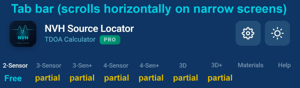
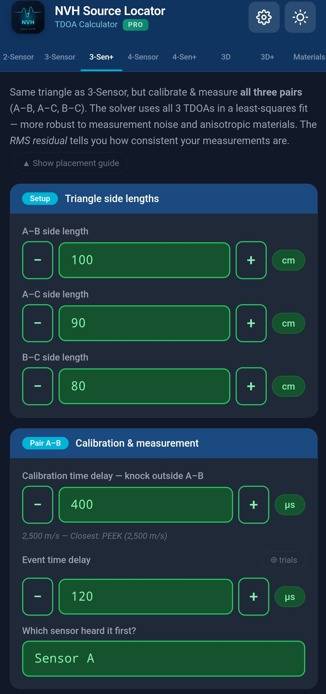
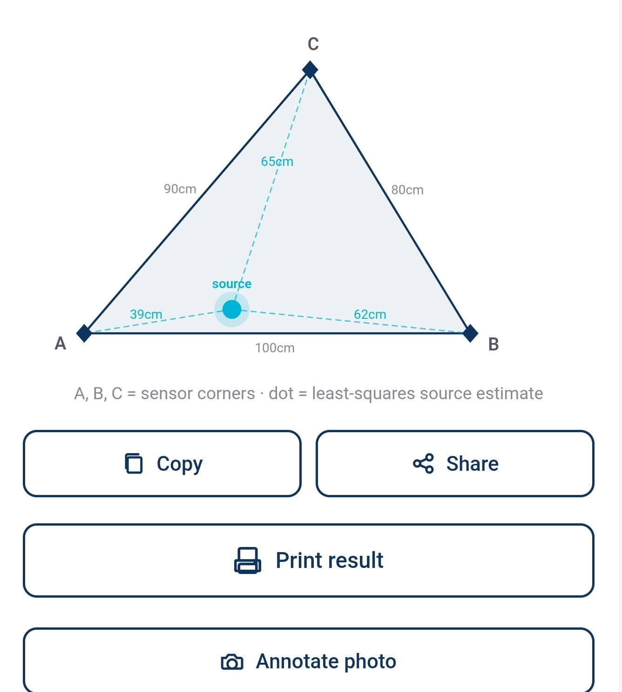
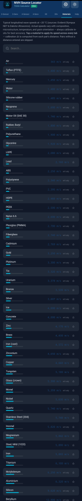
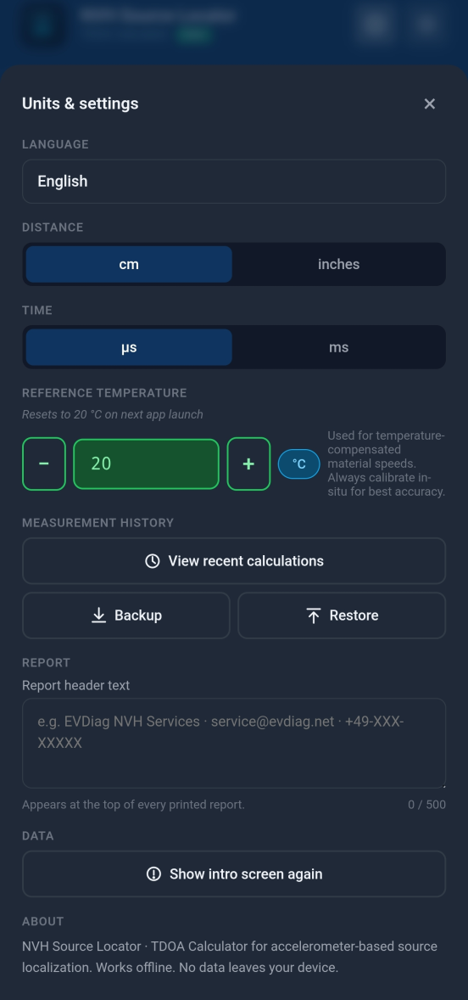
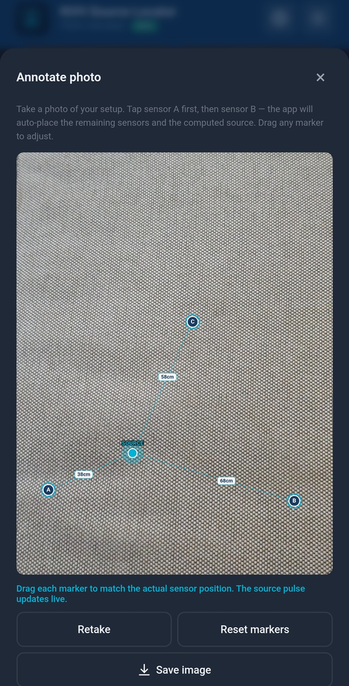
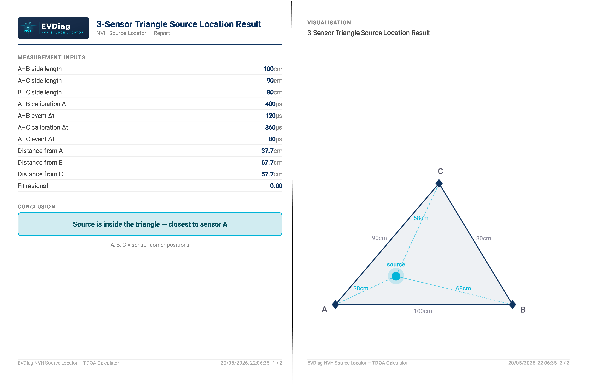
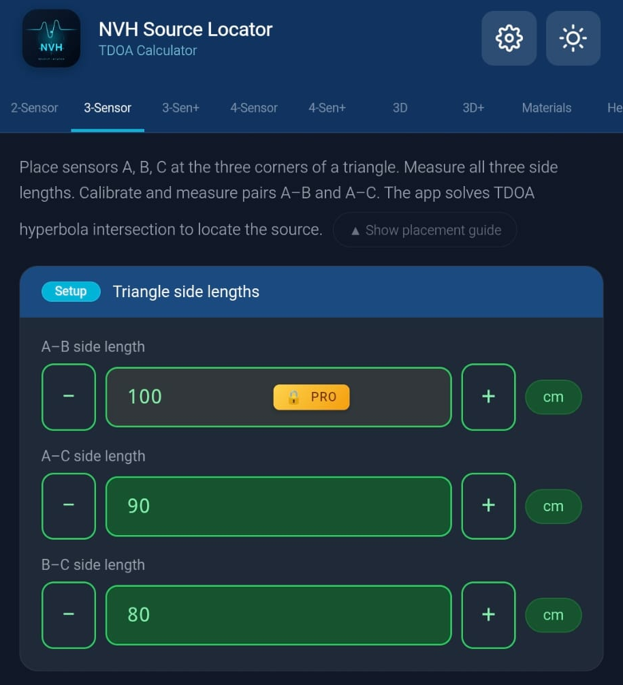
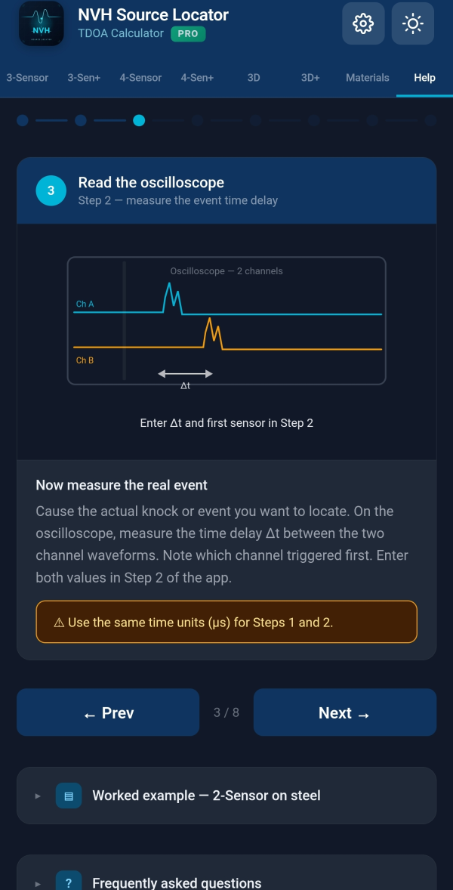

Ang NVH Source Locator ay isang kasangkapan sa pagsukat para sa paghanap ng mga pinagmumulan ng ingay at vibrasyon gamit ang TDOA (Time Difference of Arrival) mula sa mga signal ng accelerometer na nakuha sa oscilloscope o sistemang pansukat.
Sinasaklaw ng gabay na ito ang lahat ng tampok. Para sa mabilis na refresher, tingnan ang quick-reference.md.
Tala tungkol sa mga screenshot: Ginagamit ng dokumentong ito ang mga placeholder na screenshot mula sa app. Palitan ang bawat
../screenshots/*.pngng tunay na mga screenshot ng device habang kinukuha mo ang mga ito.
Kapag ang isang pinagmulan ng ingay ay naglalabas ng tunog o vibrasyon, ang alon ay naglalakbay sa pamamagitan ng materyal sa kilalang bilis. Kung maglagay ka ng dalawa o higit pang accelerometer sa materyal at sukatin kung kailan dumating ang alon sa bawat isa, sinasabi sa iyo ng pagkakaiba ng oras kung nasaan ang pinagmulan.
Kinukuha ng NVH Source Locator ang:
Pagkatapos ay kakalkulahin nito kung nasaan ang pinagmulan sa istraktura.
Mas maraming sensor na ginagamit mo, mas tumpak na maitatakda mo ang pinagmulan:
Kakailanganin mo ng:
Mayroong mga tab ang app sa tuktok:

| Tab | Ano ang ginagawa nito | Kailan gagamitin |
|---|---|---|
| 2-Sensor | 1D source localization sa isang linya sa pagitan ng 2 sensor | Mga mabilis na pagsusuri, mga istrakturang katulad ng beam. Ganap na libre. |
| 3-Sensor | 2D source localization gamit ang 3 sensor sa isang tatsulok | Pinakapangkalahatang paggamit, mga panel at ibabaw |
| 3-Sen+ | 3-Sensor na may over-determined least-squares solver | Mas hinihinging pagsukat, matatag sa ingay |
| 4-Sensor | 2D localization gamit ang dalawang pares (A-B + C-D) | Mga rectangular sensor layout, cross-check |
| 4-Sen+ | Advanced 2D mode, 4 sensor sa kahit anong posisyon | Mga di-rectangular na geometry, ganap na LSQ |
| 3D | 3D source localization gamit ang 4 sensor na may XYZ coordinate | Mga kumplikadong istraktura sa 3D space |
| 3D+ | 3D na may hanggang 6 sensor, over-determined LSQ | Napaka-kumplikadong mga geometry, maximum na katumpakan |
| Materials | Sound speed library + mga custom na materyal | Pumili ng isang beses bawat sesyon ng pagsukat |
| Help | Mga in-app tutorial at sanggunian | Kapag kailangan mo ng mabilis na refresher |
Libre vs Pro: Ang 2-Sensor tab ay ganap na libre. Maa-access ang ibang mga tab ngunit may mga partikular na input field na naka-lock para sa mga gumagamit ng Pro (markado ng gintong padlock badge). Ang pag-tap sa naka-lock na field ay nagpapakita ng Pro paywall.
Ang mga setting ay naa-access sa pamamagitan ng ⚙ gear icon sa kanang itaas (hindi isang tab).
Ang pinakasimpleng pagsukat: source localization sa isang linya sa pagitan ng dalawang accelerometer.
I-tap ang tab na Materials. Pumili ng materyal kung saan gawa ang iyong istraktura (hal., "Aluminum", "Steel, Mild (1020)"). Ginagamit ng app ang kilalang bilis ng tunog ng materyal upang awtomatikong punan ang field ng oras ng pag-calibrate.
Kung ang materyal ng iyong istraktura ay wala sa listahan, maaari mong pansamantalang piliin ang "Hangin" at manu-manong i-override ang oras ng pag-calibrate sa hakbang 2.
Sa 2-Sensor tab, makikita mo ang dalawang seksyon ng pares: Pares A–B at Pares A–C (A–B lang ang kinakailangan kung mayroon ka lamang 2 sensor).
Para sa bawat pares, pinupunan mo:
d): pisikal na distansya sa pagitan ng mga sensor, sa cm o pulgada (itinatakda sa Mga Setting)tCal): oras para sa isang alon upang maglakbay sa pagitan ng mga sensor sa bilis ng tunog ng materyal — awtomatikong napupunan kapag pumili ka ng materyal, ngunit maaari mong i-overridetEvent): pagkakaiba ng oras sa pagitan ng mga sensor na nakaka-detect ng kaganapan ng ingay, sa microsecondsIpinapakita ng app ang posisyon ng pinagmulan bilang distansya mula sa sensor A: - Resulta = 0: ang pinagmulan ay nasa sensor A - Resulta = distansya: ang pinagmulan ay nasa sensor B - Resulta sa pagitan: ang pinagmulan ay nasa pagitan nila - Resulta sa labas: ang pinagmulan ay nasa kabila ng isa sa mga sensor (magbababala ang toast)
Ipinapakita ng result card ang parehong distansya (mula sa A, mula sa B) at ipinapahiwatig kung aling sensor ang mas malapit.
I-tap ang 📷 I-annotate ang larawan upang kumuha ng larawan ng iyong setup. Inilalagay ng app ang mga marker para sa sensor A, B at sa pinagmulan. Kapaki-pakinabang para sa mga ulat.
Hinahanap ang isang pinagmulan sa 2D plane gamit ang tatlong sensor na nakaayos sa isang tatsulok.

Maglagay ng tatlong sensor sa iyong istraktura na bumubuo ng isang tatsulok. Equilateral, right-angle, o scalene — hinahawakan ng app ang lahat ng geometry.
Sa seksyong Mga haba ng gilid ng tatsulok, ipasok ang pisikal na distansya para sa lahat ng tatlong gilid (A–B, A–C, B–C).
Para sa bawat pares (A–B at A–C), ipasok ang: - tCal: oras ng pag-calibrate (awtomatikong napupunan mula sa materyal) - tEvent: nasukat na pagkakaiba ng oras para sa kaganapan ng ingay - Unang sensor: alin ang unang nakarinig
Ipinapakita ng app ang posisyon ng pinagmulan bilang mga X, Y coordinate na nauugnay sa sensor A (sensor A sa origin, sensor B sa X axis). Ipinapakita ng visualization ang lahat ng tatlong sensor at ang lokasyon ng pinagmulan.

Ang ilang advanced na tab ay nag-aalok ng over-determined solvers at mas mataas na dimensionality:
Parehong tatsulok setup sa 3-Sensor, ngunit i-calibrate AT sukatin ang lahat ng tatlong pares (A–B, A–C, B–C). Ginagamit ng solver ang lahat ng 3 TDOA sa isang least-squares fit — mas matatag laban sa ingay ng pagsukat at anisotropic na mga materyal. Iniuulat ang mga residual bawat pares upang makita mo ang mga di-pare-parehong pagsukat.
Maglagay ng apat na sensor sa paligid ng lugar: - A–B = horizontal na pares (kaliwa/kanang gilid) - C–D = vertical na pares (itaas/ibabang gilid)
Patakbuhin ang A–B na pares muna (horizontal), pagkatapos ang C–D na pares (vertical). Ipinapakita ng 2D map ang intersection. Ang bawat pares ay na-calibrate nang hiwalay — kapaki-pakinabang kapag nag-iiba-iba ang materyal sa buong istraktura.
Apat na sensor sa kahit anong posisyon (hindi pinipilit na rectangular). Ipares ang A sa bawat isa sa B, C, D at i-calibrate nang hiwalay. Pinapantay ng over-determined least-squares solver ang ingay ng pagsukat bawat pares at iniuulat ang mga residual bawat pares.
Ganap na 3D na pagsukat na may 4 sensor na inilagay sa 3D space. Ipasok ang (X, Y, Z) coordinate ng bawat sensor, plus ang mga oras ng pag-calibrate at kaganapan para sa bawat pares (A–B, A–C, A–D).
Katulad ng 3D ngunit sumusuporta sa hanggang 6 sensor (A hanggang F) na may over-determined LSQ. Maximum na katumpakan para sa mga kumplikadong 3D geometry.
Library ng mga karaniwang engineering material na may kilalang bilis ng tunog sa 20 °C.

Kasama sa listahan ang hangin, mga fluid, mga goma, mga polymer, mga kahoy, mga salamin, at mga metal. Ang mga bilis ay mula sa ~340 m/s (hangin) hanggang sa ~13,000 m/s (ilang mga metal sa room temperature).
14 na karaniwang ginagamit na mga metal ang may kasamang data ng temperature coefficient. Kapag ang Reference temperature sa Mga Setting ay naiiba sa 20 °C, awtomatikong inaayos ng app ang mga bilis ng mga materyal na ito:
Ang mga materyal na may compensation ay nagpapakita ng dalawang halaga sa picker: ang na-compensate na bilis (malaki, kilalang-kilala) at ang reference na bilis sa 20 °C (maliit, kulay-abo sa ibaba).
Ang mga materyal na walang compensation ay nagpapakita ng "ref only" sa italic — ang nakalistang bilis ay ginagamit nang ganoon nang hindi alintana ang temperatura.
Kung sumusukat ka ng calibration sa 2-Sensor tab, maaari mong i-save ang resulta bilang isang custom na materyal. Pagkatapos ng matagumpay na 2-sensor measurement, hanapin ang opsyon upang i-save ang nagmula na bilis sa ilalim ng isang pangalang pinili mo.
Ang mga custom na materyal ay nag-iimbak ng in-situ na sinukat na bilis; hindi kailanman naglalapat ng temperature compensation (ang bilis ay nasukat na sa test temperature).
I-tap ang star sa tabi ng anumang materyal upang markahan ito bilang paborito. Ang mga paborito ay lumalabas sa tuktok ng listahan para sa mabilis na pag-access.
Gamitin ang search bar sa tuktok upang i-filter ang mga materyal ayon sa pangalan. Ang paghahanap ay tumutugma sa parehong English canonical name at sa mga isinaling display name.
Ang bilis ng tunog sa mga materyal ay nagbabago sa temperatura. Sa automotive NVH testing, mahalaga ito: ang engine bay sa 80 °C, ang cold-soaked cabin sa -10 °C, o ang exhaust manifold area sa 200 °C ay lahat kumikilos nang iba mula sa room-temperature laboratory conditions.
Buksan ang Mga Setting (icon na ⚙) → Reference temperature. Ipasok ang temperatura ng iyong test environment sa °C (saklaw -40 hanggang +200).

Ang reference temperature ay palaging nire-reset sa 20 °C kapag inilulunsad mo ang app. Pinipigilan nito ang mga lumang setting mula sa nakaraang sesyon ng pagsukat na tahimik na maapektuhan ang gawain ngayon. Pinapaalala sa iyo ng isang maliit na italic note sa Mga Setting ang ugali na ito.
Kung gusto mong i-replay ang isang historikal na pagsukat sa orihinal na temperatura nito, i-tap lang ang entry — awtomatikong ibinabalik ang temperatura.
Karamihan sa mga di-metal na materyal ay walang maaasahang inilathalang temperature coefficient. Nagpapakita ang app ng badge na "ref only" para sa mga ito — ang kanilang nakalistang bilis ay ginagamit nang hindi alintana ang setting ng temperatura. Kung kailangan mo ng tumpak na pagsukat sa hindi-room temperature para sa mga materyal na ito, magsagawa ng in-situ calibration at i-save ang resulta bilang isang custom na materyal.
Pagkatapos ng matagumpay na pagkalkula, i-tap ang button na 📷 I-annotate ang larawan upang ilagay ang mga sensor at source marker sa isang larawan ng iyong setup.

Ang naka-annotate na larawan ay awtomatikong kasama sa mga PDF na ulat.
I-tap ang button na I-print ang resulta sa anumang result screen upang makabuo ng isang formatted na ulat.

Mga Setting → Header ng ulat. Ipasok ang pangalan ng iyong kumpanya, pangalan ng lab, impormasyon ng proyekto, o anumang nais mo sa tuktok ng bawat ulat.
I-save ang lahat ng iyong custom na materyal, mga paborito, mga setting, at history sa isang file. Ilipat sa pagitan ng mga device.
Mga Setting → Backup → i-tap ang "I-save ang backup file". Bumubuo ang app ng JSON file at binubuksan ang share sheet ng iyong telepono. I-save ito sa iyong cloud drive (Google Drive, iCloud, OneDrive), i-email sa iyong sarili, o ilipat sa anumang paraan na gusto mo.
Mga Setting → Pagpapanumbalik → piliin ang backup file mula sa storage ng iyong telepono. Ini-import ng app ang mga custom na materyal, mga paborito, history, at mga setting.
⚠️ Pinapalitan ng pagpapanumbalik ang iyong kasalukuyang data. Kung may mahalaga kang pagsukat sa kasalukuyang device, i-backup muna ang mga ito bago i-restore mula sa ibang backup.
Naa-access sa pamamagitan ng ⚙ gear icon sa kanang itaas. Ang Mga Setting ay isang modal, hindi isang tab.
| Setting | Ano ang kinokontrol nito |
|---|---|
| Mag-upgrade sa Pro | Bumili o matuto tungkol sa mga tampok ng Pro ($19.99) |
| Wika | Wika ng display ng app (30 suportado) |
| Tema | Light, Dark, o Auto (sundan ang sistema) |
| Yunit ng distansya | cm o pulgada |
| Reference temperature | Aktibong temperatura para sa compensation, -40 hanggang +200 °C |
| Header ng ulat | Custom na teksto sa tuktok ng mga nabuong ulat |
| Backup | I-export ang lahat ng data sa isang file |
| Pagpapanumbalik | I-import ang data mula sa isang backup file |
| Ibalik ang pagbili | Muling makuha ang Pro sa isang bagong device |
Ginagamit ng NVH Source Locator ang isang feature-locked freemium model:
Ang mga field na kailangan ng Pro ay nakakalat sa: - 3-Sensor, 3-Sen+, 4-Sensor, 4-Sen+ - Mga 3D at 3D+ na mode - Backup at Pagpapanumbalik - Mga PDF na ulat - Mga custom na materyal - Anotasyon ng larawan
Maaaring BUKSAN ng isang libreng user ang anumang tab at MAKITA ang interface. Hindi lang sila maaaring maglagay ng mga halaga sa mga Pro-locked na input field.


Kapag ang isang libreng user ay nag-tap sa isang naka-lock na field, ang paywall ay nag-slide upang ipakita ang: - Icon ng app na may PRO badge - Listahan ng tampok - Unlock button na may presyo ($19.99 default; maaaring mag-iba sa rehiyon) - Pag-redeem ng promo code (Android lamang — gumagamit ang iOS ng hiwalay na Offer Code flow ng Apple) - Opsyonal na promo link sa mga community channel
I-tap ang anumang naka-lock na field, o i-tap ang Mag-upgrade sa Pro sa Mga Setting. Gumagamit ng opisyal na sistema ng pagbabayad ng iyong platform (Google Play sa Android, Apple App Store sa iOS).
Kung bumili ka sa isang device at gusto mo ng Pro sa iba (parehong account):
Kung mag-redeem ka ng promo code sa Google Play Store o App Store habang tumatakbo ang NVH Source Locator sa background, awtomatikong nade-detect ng pagbabalik sa app ang bagong pagbili at ina-unlock ang Pro — walang kailangang manu-manong Pagpapanumbalik.
Android: ang button na "Mayroon ka bang Google Play promo code?" sa paywall ay nagbubukas ng Google Play redemption flow na may iyong code na pre-filled.
iOS: Hinihingi ng patakaran ng App Store 3.1.1 ang redemption sa pamamagitan ng opisyal na "Redeem Code" flow ng Apple. Nakatago ang button na Google Play sa iOS. Hanapin ang "I-redeem ang App Store code" sa Mga Setting sa halip.
Kasama sa Help tab ang mga in-app na tutorial, mga gabay sa best practice, at sangguniang impormasyon.

Mga paksang sakop: - Anong kagamitan ang kailangan mo - Paano i-position ang mga sensor para sa pinakamahusay na katumpakan - Mga tip sa pag-calibrate - Mga karaniwang sitwasyon ng pagsukat - Mga tip para sa triangulation at 3D placements - Cable routing at kalidad ng signal
tCal ang inilathalang bilis ng materyal — nag-iiba-iba ang totoong mga materyal. Ang pinaka-tumpak na pag-calibrate ay in-situ: i-tap ang isang kilalang lokasyon at hayaan ang app na makuha ang aktwal na bilis.Sinasabi ng matematika na ang pinagmulan ay hindi nasa pagitan ng iyong mga sensor. Mga posibleng dahilan: - Ang pinagmulan ay talagang nasa labas ng linya/plane ng sensor - Ang isa sa iyong mga input ay mali - Ang bilis ng pag-calibrate ay masyadong malayo sa realidad
Ang implicit na bilis ng tunog mula sa iyong mga input ay malayo sa anumang karaniwang materyal (mas mababa sa 50 m/s o higit sa 20,000 m/s). Suriin ang iyong mga input — malamang na typo sa tCal o distance.
Suriin ang Reference temperature sa Mga Setting. Kung hindi 20 °C, ipinapakita ng mga ipinapakitang bilis ang temperature compensation. Ipinapakita ng app ang "ref X @ 20°C" sa ilalim ng mga na-compensate na bilis upang maaari mong i-verify.
Ang mga lumang history entry na ginawa bago ang app version 1.75 ay maaaring hindi nag-imbak ng temperatura. Kung ginawa mo ang pagsukat sa hindi-20 °C na temperatura, ang playback ay gagamit ng kasalukuyang setting. Manu-manong itakda ang temperatura sa Mga Setting bago mag-playback, O sukatin muli.
Ang mga marker ay awtomatikong inilalagay batay sa input geometry. I-drag ang mga ito upang i-adjust. Ang pag-adjust ng mga marker ay nagba-update sa posisyon ng pinagmulan sa photo overlay — ngunit HINDI nagbabago ang underlying na resulta ng pagkalkula.
Tiyakin na gumagamit ka ng isang backup file na nabuo ng pareho o mas bagong bersyon ng app. Maaaring kulang ang mas lumang mga backup file sa kasalukuyang mga field ng data.
Ayon sa disenyo: kapag inalis mo ang focus mula sa isang numeric field (mag-tap sa ibang lugar), kung walang laman ito, negatibo, o naglalaman ng non-numeric na teksto, tumatalon ito sa 0. Pinipigilan ang tahimik na sira na mga kalkulasyon mula sa hindi sinasadyang nalinis na mga input. Hindi kasama ang input ng temperatura (sa halip ay clamp ito sa -40/+200).
Makipag-ugnayan sa support@evdiag.net na may:
- Modelo ng iyong device at bersyon ng OS
- Bersyon ng app (Mga Setting → ilalim ng pahina)
- Paglalarawan kung ano ang sinubukan mo
- Mga screenshot kung maaari
Ang NVH Source Locator ay binuo ng EVDiag. Bisitahin ang https://evdiag.net para sa mga update at resources.